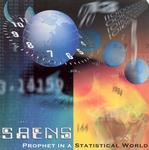

| Artist: | Saens |
| Title: | Prophet In A Statistical World |
| Label: | Cyclops CYCL 141 |
| Length(s): | 74 minutes |
| Year(s) of release: | 2004 |
| Month of review: | [09/2004] |
| 1) | Xx84 | 7.52 |
| 2) | Suite No.2 (Prelude) | 1.04 |
| 3) | Lenina | 10.16 |
| 4) | Time Machine | 12.49 |
| 5) | Forbidden Dreams | 6.36 |
| 6) | Welcome | 1.29 |
| 7) | Statistal World | 8.58 |
| 8) | I Wanna Be Free | 2.15 |
| 9) | Libera Me | 1.44 |
| 10) | The Prophet | 11.40 |
| 11) | Revolution | 6.05 |
| 12) | Freedom | 2.39 |
Another strong point is the feel in the vocals. Albethey a bit on a the dramatic side, they do feel the story, reminding me of Andy Sears, Twelfth Night's vocalist in the absence of Geoff Mann. Especially the track Take A Look comes to mind, handling a subject akin to the one here: the reality of living in world where science seems to play an increasingly important role. Apart from this vocal style, especially the lingering guitar style and the dramatic build up of tension remind of Twelfth Night during their heyday.
One of the results of using ideas only for their allotted time that this album is free -or at least mostly so- of the kind of instrumental no man's land sections we heard before. Even though the music is clearly telling a story, there are hardly any sacrifices on the musical side, one of the main of flaws of many operas, be they rock or classical operas. The parties for the different instruments, including vocals, are well adapted to eachother, creating a whole that is more than the total of the parts.
It could be claimed that this album is even more dramatic than its predecessor, because, well, it is. I find the band remain on the right side of pathos, but some might figure differently. What helps is that it's less bombastic as the sort of concept albums we've seen released on Magna Carta, and others like them.
I couldn't help wondering whether the band would be able to hang on to the quality of the first couple of tracks, an issue raised by the Welcome track, which initiates the switch to the second part of this album. This track definitely draws the line, but does make a bit fearful for what is to come. Fortunately after this somewhat odd sounding track, which remains quite far from making the impression it should and was probably intended to, we return to the style before the split.